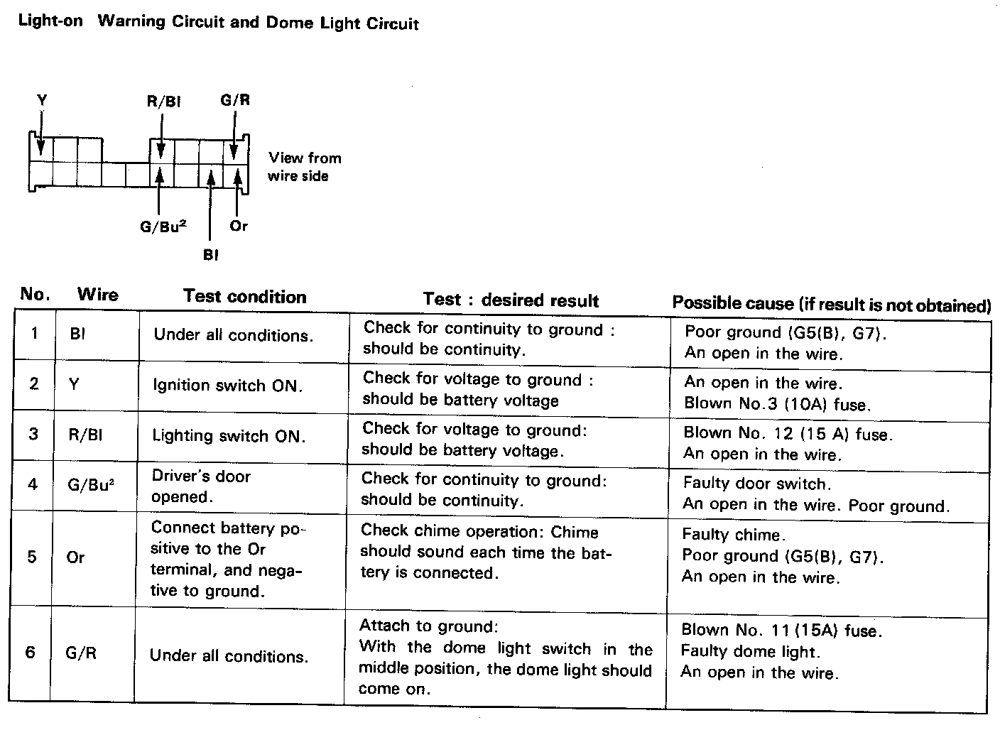
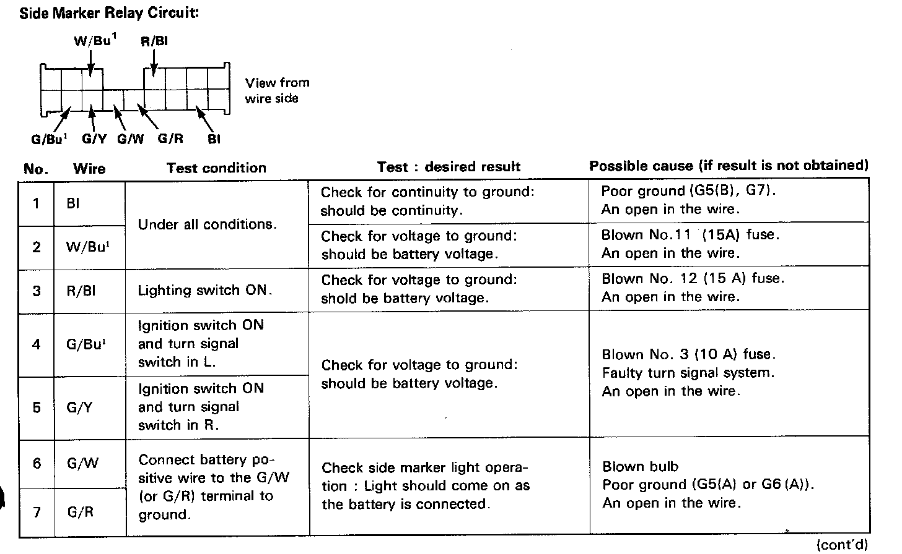

Integrated Control Unit
Integrated Control Unit Input Test
Light-on Warning Circuit and Dome Light:

Side Marker Relay Circuit:

Remove the dashboard lower panel to disconnect the 16P connector from the control unit.
Note: Replace the control unit if all tests prove OK.